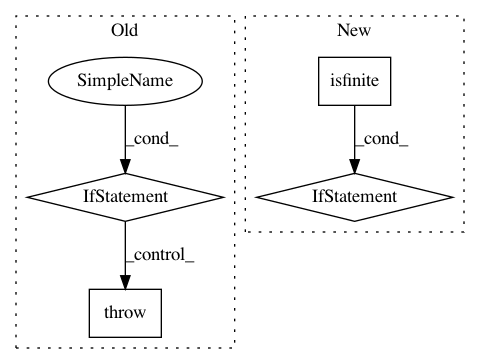

c7308c4ab8870e6506ee13801da4fe88f1a43004,scipy/sparse/linalg/isolve/lgmres.py,,lgmres,#Any#Any#Any#Any#Any#Any#Any#Any#Any#Any#Any#,14
Before Change
// -- Get the LSQ problem solution
y, info = trtrs(R[:j,:j], Q[0,:j].conj())
if info != 0:
// Zero diagonal -> exact solution, but we handled that above
raise RuntimeError("QR solution failed")
y *= inner_res_0
if not np.isfinite(y).all():
// Floating point over/underflow, non-finite result from
After Change
if inner_res <= tol * inner_res_0 or breakdown:
break
if not np.isfinite(R[j-1,j-1]):
// nans encountered, bail out
return postprocess(x), k_outer + 1
// -- Get the LSQ problem solution
//
// The problem is triangular, but the condition number may be
// bad (or in case of breakdown the last diagonal entry may be
// zero), so use lstsq instead of trtrs.
y, _, _, _, = lstsq(R[:j,:j], Q[0,:j].conj(), lapack_driver="gelsy")
y *= inner_res_0
if not np.isfinite(y).all():
In pattern: SUPERPATTERN
Frequency: 3
Non-data size: 4
Instances
Project Name: scipy/scipy
Commit Name: c7308c4ab8870e6506ee13801da4fe88f1a43004
Time: 2016-06-06
Author: pav@iki.fi
File Name: scipy/sparse/linalg/isolve/lgmres.py
Class Name:
Method Name: lgmres
Project Name: matplotlib/matplotlib
Commit Name: da83457d51b516d036b3373c6805443f76185451
Time: 2019-04-03
Author: 2836374+timhoffm@users.noreply.github.com
File Name: lib/matplotlib/figure.py
Class Name: Figure
Method Name: set_size_inches
Project Name: scipy/scipy
Commit Name: f30505b836141030f50cdd941f9cbc8f4cda0995
Time: 2016-02-29
Author: pav@iki.fi
File Name: scipy/sparse/linalg/isolve/lgmres.py
Class Name:
Method Name: lgmres